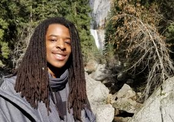

ABOUT CHRISTOPHER SMITH
Allow me to Introduce Myself

Hi! My name is Christopher Smith. I'm a senior computer science
student at San Francisco State University. Although I started as
an engineering major, working in databases with the College of
Science and Engineering showed me all the possibilities a career
in computer science could offer.
After that, the switch was easy.
I now spend my time polishing my coding skills, writing applications
and playing video games. I'm also an experienced game developer with
a couple finished titles under my belt.
You can see my finished work HERE
And follow my current projects HERE
Team Role: Backend Developer
LinkedIn